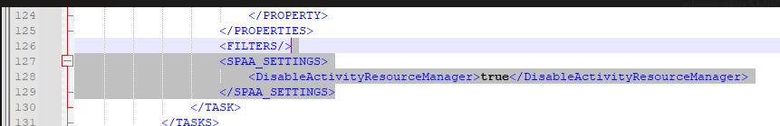

Title:
KB_HOTFIX_stealthaudit-hotfix-11.6.0.039
Summary: Add setting to SPAA that disables invocation of ActivityResourceManager methods
Submitted by:
Michael Burrofato
Affected Versions:
11.6
Affected Module:
SPAA
Dev Ticket:
ADO Bug 347046
Resolved in Version:
KB Type:
Hotfix
Escalations
412676
Instructions:
1. Unblock the hotfix zip file in the windows property dialog, if an unblock button exists there.
2. Close all instances of StealthAUDIT (check task manager under processes for all users)
3. Update all DC files in your %SAInstallDir%DC folder
4. Update all PrivateAssemblies files in your %SAInstallDir%PrivateAssemblies folder.
5. Update all Agent files in your %SAInstallDir%Agent folder
6. If using Agent mode for scans, please install SPAA Agent version 11.6.0.24 or higher to avoid compatibility issues. (This is only necessary for SP On-Prem, not SharePoint Online)
7. A hidden option was added to SPAA to enhance performance. To enable this, modify the
job xml of all SPAA/SPAC scan and bulk import jobs

https://releases.netwrix.com/products/stealthaudit/11.6/stealthaudit-hotfix-11.6.0.039.zip